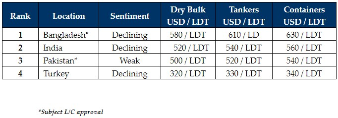

inWeekly Demolition Reports08/05/2023

As we enter a period of contraction going into the traditionally weaker and quietersummer / monsoon months, sentiments have further declined across the sub-continent markets (and even Turkey) this week.
To further compound the presently bearish ship recycling sentiments, local steel plate prices have further weakened at key destinations and LME steel futures show few signs of any sort of recovery in the immediate future.
That being said, several vessels have been working firm over the past few weeks and sales have been taking place. However, these are primarily HKC intended units being committed into India, even at these gradually deteriorating rates.
Moreover, due to a recent uptick in freight rates, fewer than expected Containers and Dry Bulk units have been introduced into the markets for recycling and this is giving the ship recycling industry, an opportunity to draw breath and find true bottom, before reoffering at these new (lower) realities.
The overall correction appears to be between USD 50 – USD 60/LDT since the peaks seen earlier this year. Due to such turbulence, it may be that End Buyers wish to wait and watch market developments before getting back into the buying once again.
Bangladesh & India remain the two most active / competing markets for the time being, as Pakistan remains a non-entity for over two months now, completely out of the market action due to unworkable L/Cs, uncompetitive pricing, and a precarious financial and political outlook (especially in the near future).
Finally, the Turkish market continues to deteriorate (as predicted last week), with weakening steel plate prices and a currency that seems likely to breach TRY 19.50 against the U.S. Dollar next week. As a result, Aliaga’s recycling prices have (negatively) re-adjusted by USD 10/MT.
For week 18 of 2023, GMS demo rankings / pricing for the week are as below.

📄 Download PDF: Ship-recycling-market-insight-week-18-2023-Contraction.pdfSource: GMS,Inc. ,https://www.gmsinc.net/gms_new/index.php/web